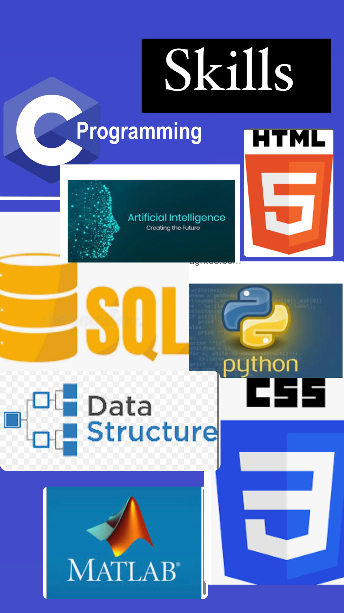
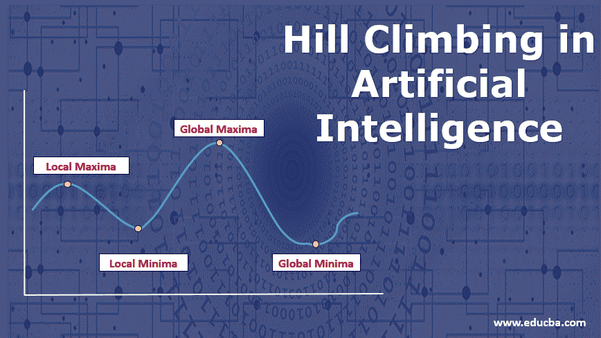
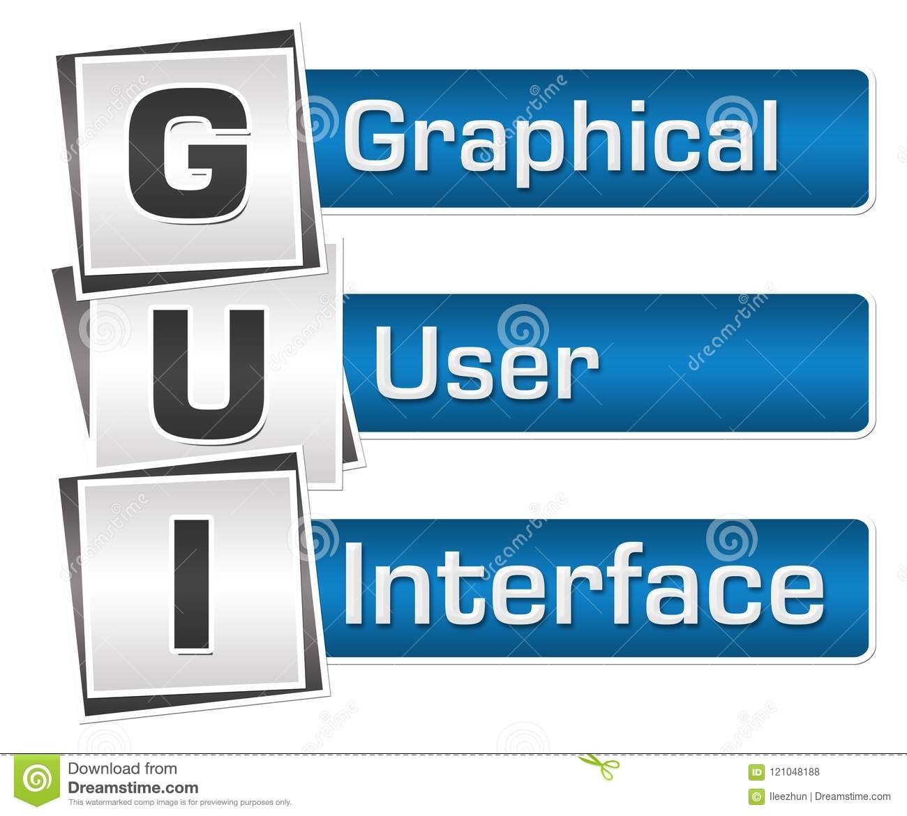
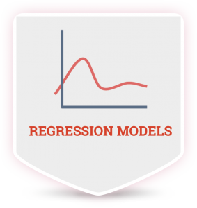

I am a second year student pursuing my B.TECH Artificial intelligence undergraduate degree from Amity university noida. Currently what excites me is python programming, Artificial intelligence algorithms. I am planing to learn machine learning, deep learning . I am basically from Himachal Pradesh. I love to dance, travel, sing, bake in my free time.


In my project I have used the The steepest-Ascent hill climbing algorithm. The problem that I took is to find the shortest path possible between 4 delivery locations for a pizza delivery boy.
I have created a portfolio website for myself from my knowledge CSS , HTML , bootstrap, Sass, javascripts. You can see my code on the link below (at my GitHub repository) and the website in the featured section.
collecting data by web scraping using python.In this project I'll be scraping job portals to find the top skills required for different jobs.

creating a GUI to show all the database that I created in mysql (in much simple form).

creating regression models
1 simple regression model- To predict the BMI of a person (dependent variable) through the age i.e. independent variable.
2 multiple regression model - TO predict the temperatue (dependent variable) and the dependent variables are Humidity, wind speed, wind bearing and visibility.
3 Logistic Regression model(classification model) - To predict that the person is a smoker or not.